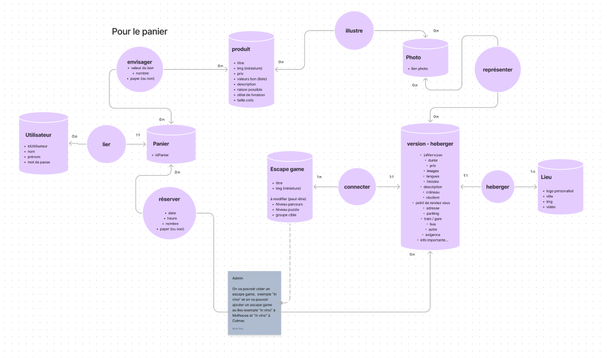
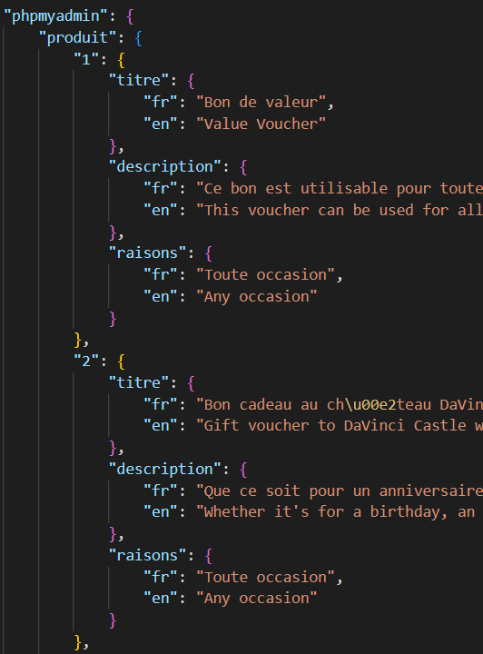
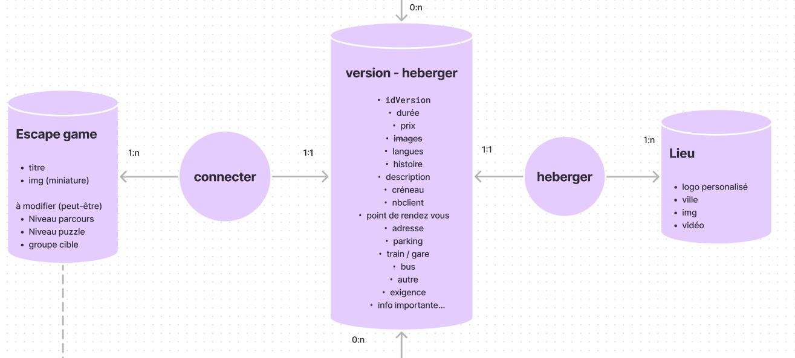

Site | Réservation escapes games 2024
Description
En groupe de 2 nous devions créer un site (fictif) pour réserver des escape games en pleine air. Sur ce projet je me suis principalement occupé du Back End, même si j'ai aussi apporté quelques idées de design. Sur ce site on retrouve la parti publique qui permet de trouver et réserver des escape games et la partie administrateur pour ajouter, modifier ou supprimer des escape games. Le site fonctionne en MVC (Modèle, Vue, Contrôleur) et avec une base de données.
Un des gros chalanges de ce site était la mise en place d'un système de traduction, ainsi qu'une solution de préremplissage des escape games.
Un des gros chalanges de ce site était la mise en place d'un système de traduction, ainsi qu'une solution de préremplissage des escape games.
J’ai commencé par réfléchir à comment structurer la base de données avec les escape games, les produits en vente et les comptes d'utilisateurs. J’ai donc fait un MCD (Modèle Conceptuel de Données), pour organiser toutes les données dont j'avais besoin. J’ai par la suite mis le MCD sous forme de MLD (Modèle Logique de Données) et créé la base de données sur PhpMyAdmin vis à Laragon. Les mots de passe des comptes sont cryptés dans la base de données.


Pour la traduction, en français et en anglais, tous les textes sont stoké dans un json. Chaque contenu a sa version en anglais et en français. Une fonction Javascript va se charger d'afficher le contenu sur le site en fonction de la langue choisie. Pour ajouter les escape game, il faut remplir le contenu en anglais et en français. J'ai choisi de fonctionner ainsi pour avoir une traduction adaptée à la langue, par exemple, une expression française traduite littéralement n'existe peut-être pas en anglais. De plus, la traduction automatique est déjà possible avec Google Traduction.
Il faut savoir que dans cette situation, une entreprise organise des escape games dans plusieurs villes. Un escape game peut se retrouver dans plusieurs villes avec la même histoire, mais avec des noms de personnage et de lieu différent. Pour améliorer l'expérience des administrateurs, il est possible de soit créer un nouvel escape game, où là on remplit toutes les informations, ou on peut créer une nouvelle version d'un escape game dans une autre ville. Le formulaire sera alors déjà prérempli avec les informations communes, il ne restera plus qu'à modifier les noms des personnages et des lieux.

Outils utilisés pour ce projet
Visual Studio Code
Laragon
Github